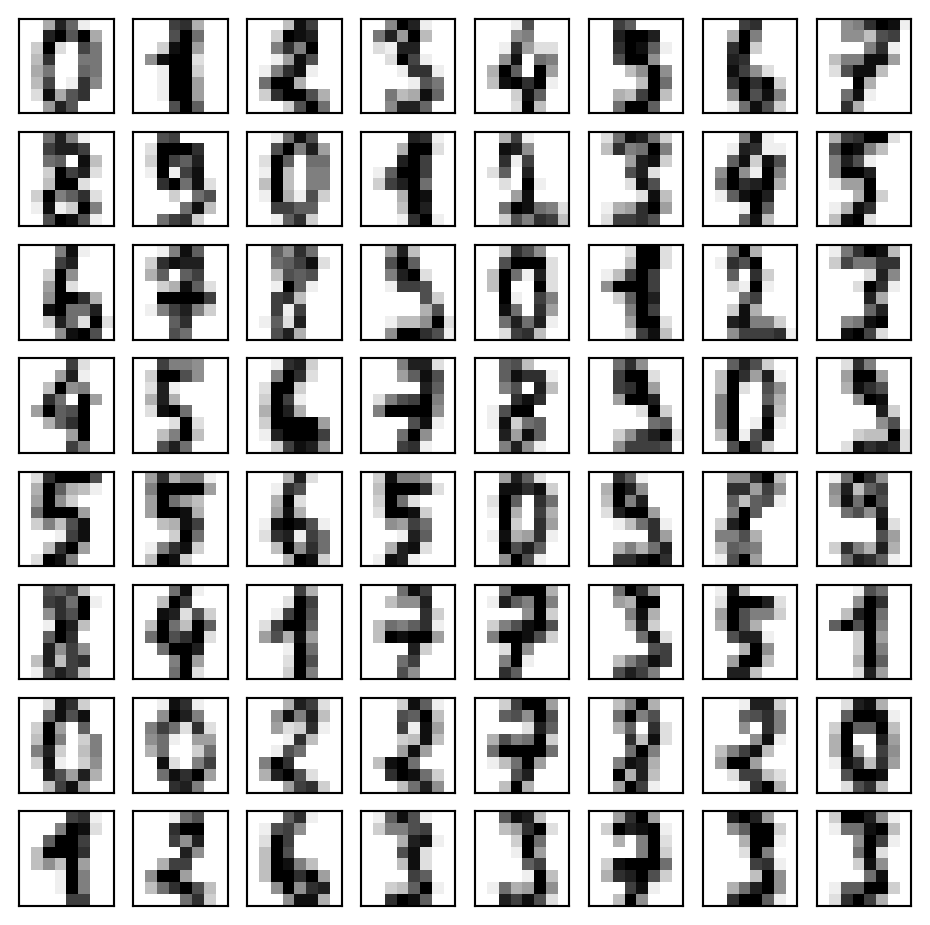
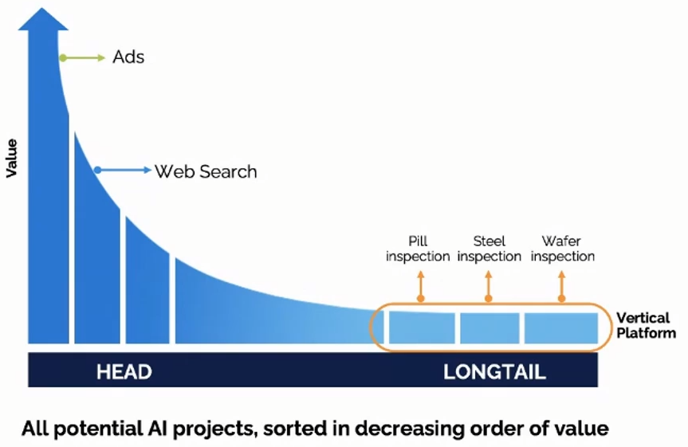
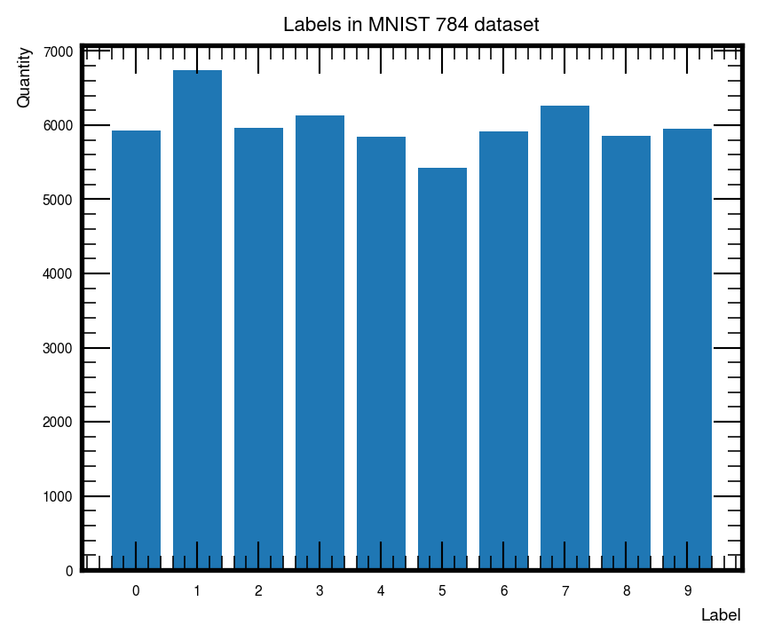
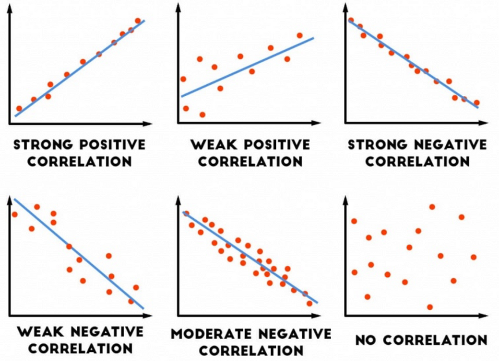
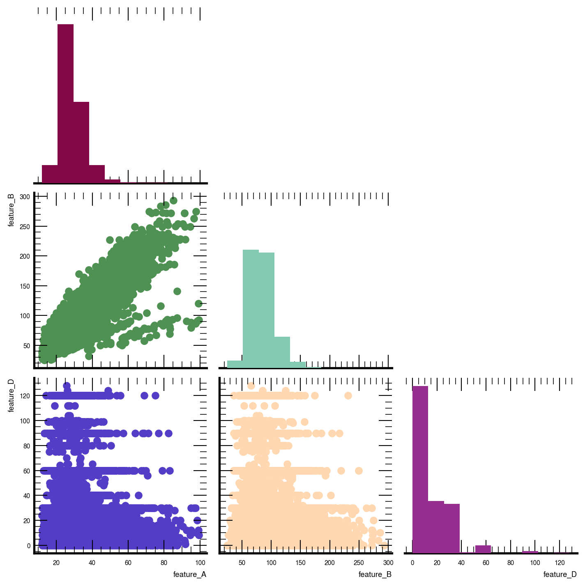
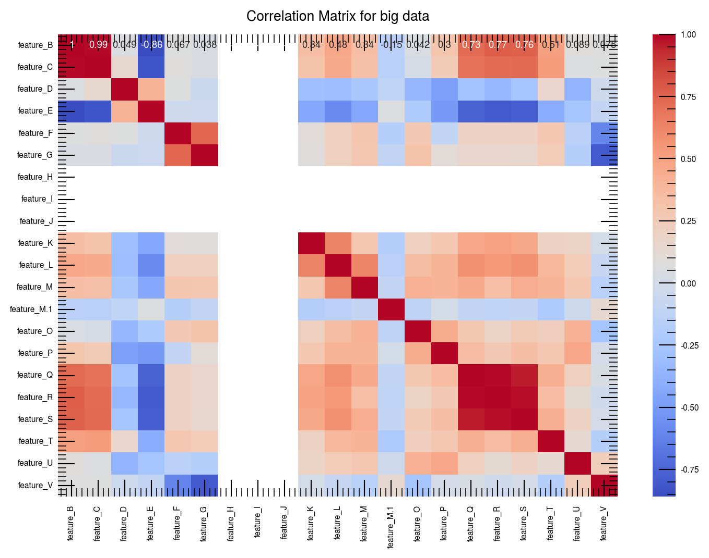
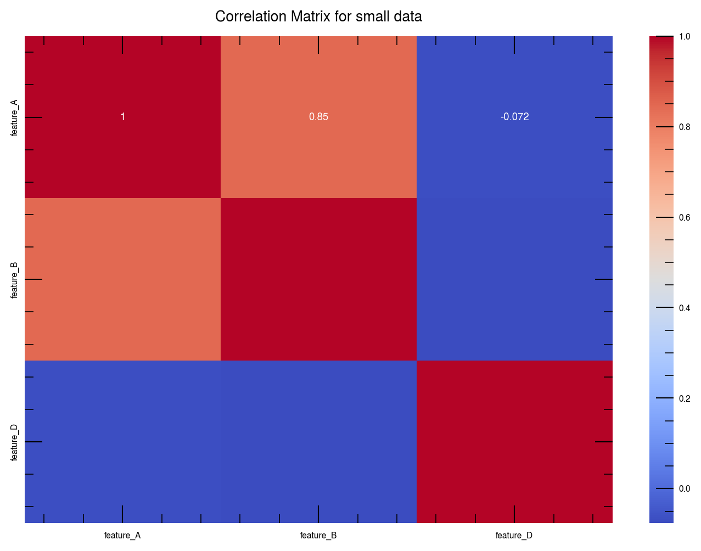

About Data
Before venturing into any advanced analysis of data using statistical, machine learning, and algorithmic techniques, it is essential to perform basic data exploration to study the basic characteristics of a dataset.
By studying it basic properties, we may find useful patterns, connections, and relationships within data. This is usually called data exploration or exploratory data analysis (EDA).
The whole idea is to get better understanding of the dataset at hand. We want to know, whether our data is good or not.
Once we have good data, we can training our machine learning model and get accurate results.
Data barier to widespread AI adoption
- small datasets
- Long tail problem (customization)1

Data-Centric AI
Currently, the majority of AI applications are model-centric, one possible reason behind this is that the AI sector pays careful attention to academic research on models. According to Andrew Ng2, more than 90% of research papers in this domain are model-centric. In this approach, data is frequently overlooked, and data collection is viewed as a one-time event.
In model-centric approach, you hold the model or code fixed and iteratively improve the quality of the data. This is shift from big data to good data.
Goodness of dataset:
What makes a good dataset?
- quality (representative and high-quality of inputs data)
- quantity (consistent and accurate labels on target data/ground truth)
- variability (reflect post deployment changes)
data cleaning is no longer merely a “pre-processing” step, but an iterative ML process!
Dataset Source Type
Common type of dataset is:
- categorical data (image, voice, videos)
- tabular/numerical data
- time series
- text
Categorical Data
Example 1
Imagine you have mnist image data below.
Now, since our data now is images and not tabular. We can use simple histogram plot like Figure 3 to view each class of MNIST dataset.
- We can observe that data distribution
almostthe same (almost balanced) for each class

Tabular Data
- scatter plot \(\Longrightarrow\) two variables are plotted along two axes.
- pairplot \(\Longrightarrow\) pairwise relationships between variables within a dataset
The closer the data points come to forming a straight line when plotted, the higher the correlation between the two variables, or the stronger the relationship.
If a relationship exists, the scatterplot indicates its direction and whether it is a linear or curved relationship. Relationships between variables can be described in many ways: positive or negative, strong or weak.

So, in statistical terms we use correlation to denote association between two quantitative variables.
Example 1
Imagine you have tabular data as below.
| feature_A | feature_B | feature_D | |
|---|---|---|---|
| 0 | 14.54 | 32.66 | 16 |
| 1 | 28.29 | 77.11 | 0 |
| 2 | 33.47 | 88.45 | 3 |
| 3 | 28.73 | 93.44 | 30 |
| 4 | 24.37 | 88.45 | 4 |
Dataset in Table 1 have 7 columns \(\Longrightarrow\) 7 features
Question : From Figure 4, what is the best way to describe or visualize the data given to us? Answer: Let’s do pair-plot (combination of scatter plot)

What can we say about Figure 5 ?

Example 2
| feature_B | feature_C | feature_D | feature_E | feature_F | feature_G | feature_H | feature_I | feature_J | feature_K | ... | feature_M | feature_M.1 | feature_O | feature_P | feature_Q | feature_R | feature_S | feature_T | feature_U | feature_V | |
|---|---|---|---|---|---|---|---|---|---|---|---|---|---|---|---|---|---|---|---|---|---|
| 0 | 27.0 | 30.1 | 24.0 | 83.68 | 0.3 | 100.0 | rain | 0 | 0 | 4.0 | ... | 0.0 | 1011.0 | 26.8 | 10.0 | 0 | NaN | 0 | 10 | Rain, Partially cloudy | rain |
| 1 | 27.0 | 30.0 | 24.0 | 84.04 | 0.0 | 0.0 | NaN | 0 | 0 | 3.2 | ... | 0.0 | 1011.0 | 26.8 | 10.0 | 0 | NaN | 0 | 10 | Partially cloudy | partly-cloudy-night |
| 2 | 27.0 | 29.6 | 23.0 | 79.12 | 0.0 | 0.0 | NaN | 0 | 0 | 3.2 | ... | 0.0 | 1010.9 | 26.8 | 10.0 | 0 | NaN | 0 | 10 | Partially cloudy | partly-cloudy-night |
| 3 | 26.9 | 29.9 | 24.0 | 84.40 | 0.0 | 0.0 | NaN | 0 | 0 | 4.7 | ... | 0.0 | 1010.0 | 25.0 | 9.9 | 0 | NaN | 0 | 10 | Partially cloudy | partly-cloudy-night |
| 4 | 26.0 | 26.0 | 24.0 | 88.75 | 0.9 | 100.0 | rain | 0 | 0 | 5.0 | ... | 0.0 | 1009.9 | 25.0 | 9.9 | 0 | NaN | 0 | 10 | Rain, Partially cloudy | rain |
5 rows × 21 columns
But if we have many features like Table 2 and want to plot pair-plot like Figure 6, seem to overwhelming and confuse isn’t?
Solution? Use correlation heatmap \(\Longrightarrow\) easier to see based on correlation value/coefficient, r (recall our Figure 4).r value is the degree of association.
| Correlation Value (r) | Strength of Relationship |
|---|---|
| r < 0.3 | None or very weak |
| 0.3 < r <0.5 | Weak |
| 0.5 < r < 0.7 | Moderate |
| r > 0.7 | Strong |
Now, based on Table 3, let change our Figure 6 to correlation heatmap


Time Series Data
Example 1
Imagine you have time-series data as below.
| Temperature (C) | Apparent Temperature (C) | Humidity | Wind Speed (km/h) | Wind Bearing (degrees) | Visibility (km) | Loud Cover | Pressure (millibars) | Daily Summary | |
|---|---|---|---|---|---|---|---|---|---|
| 0 | 9.472222 | 7.388889 | 0.89 | 14.1197 | 251.0 | 15.8263 | 0.0 | 1015.13 | Partly cloudy throughout the day. |
| 1 | 9.355556 | 7.227778 | 0.86 | 14.2646 | 259.0 | 15.8263 | 0.0 | 1015.63 | Partly cloudy throughout the day. |
| 2 | 9.377778 | 9.377778 | 0.89 | 3.9284 | 204.0 | 14.9569 | 0.0 | 1015.94 | Partly cloudy throughout the day. |
| 3 | 8.288889 | 5.944444 | 0.83 | 14.1036 | 269.0 | 15.8263 | 0.0 | 1016.41 | Partly cloudy throughout the day. |
| 4 | 8.755556 | 6.977778 | 0.83 | 11.0446 | 259.0 | 15.8263 | 0.0 | 1016.51 | Partly cloudy throughout the day. |

References
1.
2022, N. G. The data-centric AI movement. (2022).
2.
DeepLearningAI. A chat with andrew on MLOps: From model-centric to data-centric AI. (2021).